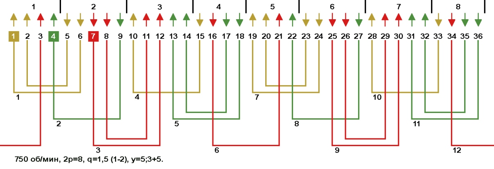

Перейти на главную страницу справочника.
Однослойная обмотка с дробным числом пазов на полюс и фазу со сплошной фазной зоной в электродвигателях 750 об/мин, Z1=36.
Число пазов на полюс и фазу q=1,5 при Z1=36 и 2p=8. Фазная зона занимает 1,5 паза в полюсе (q=1,5).
- На Рис. 1 схема укладки концентрической однослойной обмотки. Стрелками указано направление мгновенных значений тока в фазных зонах и полюсах. Катушки (катушечные группы) первой фазы "А" занимают пазы 1, 2, 5, 6, 10, 15, 19, 20, 23, 24, 28, 33 и находятся в фазных зонах своей фазы. Так же в фазах "В" и "С" стороны катушек находятся в своих фазных зонах, поэтому называется обмоткой со сплошной фазной зоной.
- Число пазов на полюс и фазу у данной обмотки дробное q=1,5, но как по схеме укладки определить сколько пазов занимает сплошная фазная зона?
- Для определения числа пазов сплошной фазной зоны для однослойных обмоток с дробным числом пазов на полюс и фазу, нужно число пазов занимаемых одной фазой разделить на 2 и полученное число разделить на число катушек (катушечных групп) в фазе. В данном примере фаза занимает 12 пазов, катушек (катушечных групп) в фазе 4, то сплошная фазная зона занимает 12/2/4=1,5 паза.
Рис. 1 
{kind=link}
- Выше показанная обмотка называются обмоткой со сплошной фазной зоной, так как стороны катушек (катушечных групп) расположены в фазных зонах своих фаз.
Недостатком обмоток со сплошной фазной зоной являются большие потери в стали сердечника, вызванные несинусоидальностью МДС в воздушном зазоре.
28.03.2019 г.